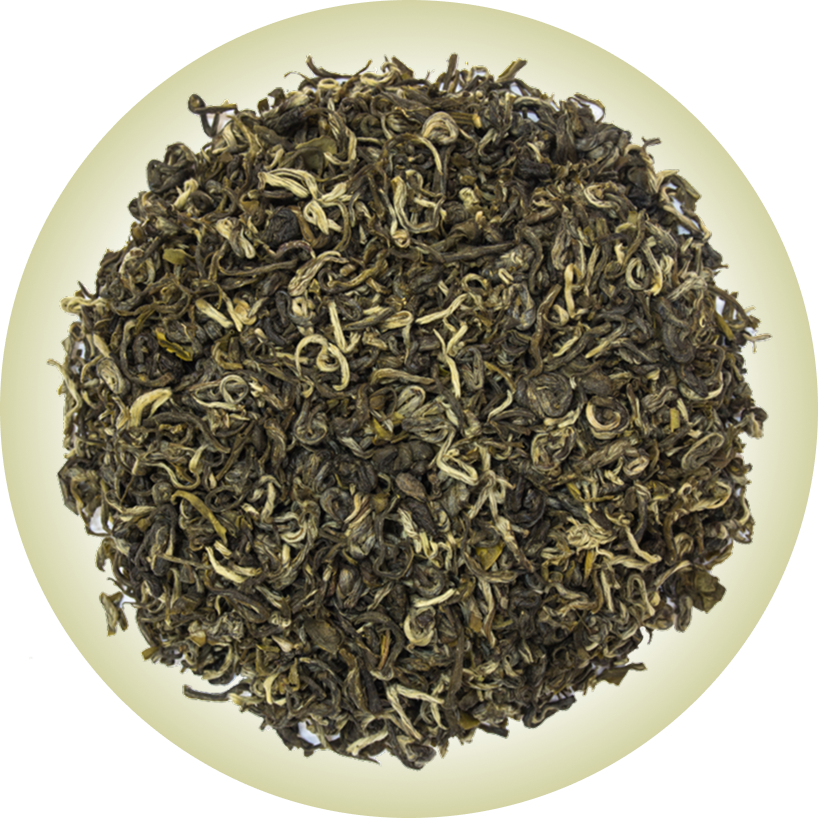

Легенда гласит, что изначально Дунтинь Билочунь назывался Ся Шань Жень Сян (невероятный аромат). А все потому, что сборщики чая, желая унести с плантации как можно больше для поставки к императорскому двору, заполнили даже карманы и полы халатов. От нагрева они начали благоухать, поэтому чаю и дали такое название. Лишь потом, в конце 17-го века император Кан Си попробовал этот чай во время своего визита на озеро Тай Ху и был действительно изумлён его ароматом, но название показалось ему вульгарным и недостойным такого чая. Выпив чай, император посмотрел на листья, напоминавшие ракушки улиток, и назвал чай Би Ло Чунь (зеленые спирали весны).
Заваривать кипятком, остывшим до 70–75°С в фарфоровой гайвани, чайнике из пористой глины или стеклянной посуде. Пропорция заварки к воде: 3–4 гр на 100 мл. Пить проливом с постепенным увеличением экспозиции. Выдерживает 7–8 завариваний.
